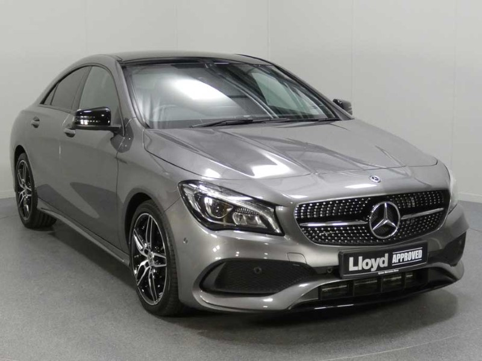
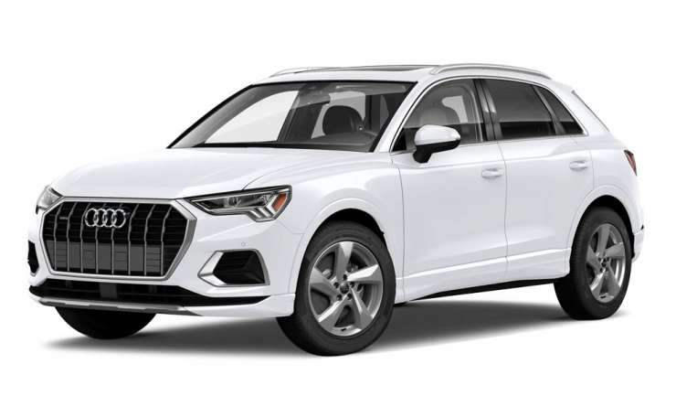
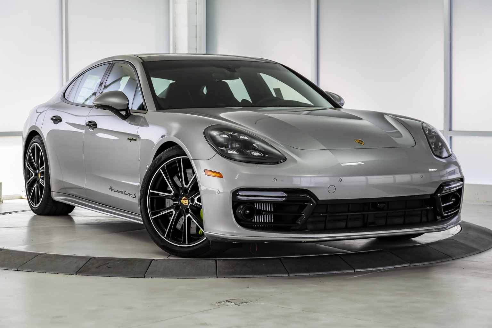

BMW X6 - cena ~74000€
Poput novog X5 koji je predstavljen 2018. godine, i novi X6 je napravljen na CLAR platformi, a u pitanju je nešto duži i prostraniji automobil od dosadašnje generacije. BMW je za novu generaciju X6 predvideo i vazdušno oslanjanje, sistem Integralnog aktivnog upravljanja, standardna LED prednja svetla, opciona svetla sa laserskom tehnologijom, treću generaciju Head-Up displeja, BMW Live Cockpit Professional sa dva ekrana od po 12.3 inča, novi iDrive 7.0, multifukcionalni volan, glasovno prepoznavanje, kontrolu gestovima, bežično punjenje telefona, ambijetalno osvetljenje sa šest boja, panoramski krov, Bowers & Wilkins Diamond 3D audio sistem od 1.500 vati i sa 20 zvučnika, Parking Assistant Plus ( automatizovano parkiranje bez učešća vozača), sistem za održavanje vozila u kolovoznoj traci i druge brojne sisteme asistencije vozaču. U gami motora će se na početku naći dva benzinca i dva dizelaša (svi u kombinaciji sa pogonom na sva četiri točka). Sve možete videti u galeriji. Ovo su najbolji novi automobili.

Mercedes-benz CLA 180 - cena ~30000€
Novi Mercedes-Benz CLA ne samo da je vozilo koje pobuđuje najviše emocija u svojoj klasi, ono je takođe izuzetno inteligentno. Počev od MBUX Interior Assist sistema, koji prepoznaje operativne zahteve vozača date kroz gestove. On u isto vreme oprema unutrašnjost vozila inteligentnim sistemom upravljanja preko proširene realnosti za navigaciju i razumevanje indirektnih glasovnih komandi za ENERGIZING COACH sistem koji pruža individualne preporuke za vežbanje, novi CLA nudi niz veoma pametnih rešenja. Vlasnici CLA su među najmlađima u celokupnom Mercedes portfoliju. Tokom 2017-e, jedan od dva kupca u Evropi je ranije vozilo konkurentski brend. Preko 75 procenata evropskih stranaka koji su ranije vozili CLA ili Shooting Brake bira Mercedes‑Benz za svoje sledeće vozilo. Sa kabinom pomerenom unazad, sportski GT izgled zadnjeg dela uravnotežava elegantnost i sportski izgled. U unutrašnjosti, svi elementi su usaglašeni sa primarnim dizajn temama ‘visoko-tehnološki’ i ‘mladalački avangardno’ – bilo da je u pitanju upravljač, modul ručice za otvaranje vrata, centralna konzola ili sedišta. Kao i kod A-Klase, jedinstvena unutrašnja arhitektura se posebno ogleda u obliku posebno avangardnog dizajna komandne table. Sve možete videti u galeriji. Ovo su najbolji novi automobili.

Audi Q3 - cena ~31000€
Audi je u proteklom periodu već promovisao više noviteta (Q8, novi A1 Sportback, obnovljeni A4 i doterani TT) ali pre odlaska na odmor ljudi iz Audija će predstaviti i potpuno novi Q3 druge generacije (prva generacija je inače prodata u 1.1 milion primeraka). Što se dimenzija tiče, novi Q3 je 97 mm duži od dosadašnjeg (sada 4485 mm), 18 mm je širi (1849 mm), 5 mm niži (1585 mm), međuosovinsko rastojanje je produženo za 78 mm, dok su točkovi od 17 do 20 inča. Podrazumeva se i više mesta u unutrašnjosti (posebno za putnike pozadi), kao i veliki prtljažnik od 530 litara (675 litara kada se klizna zadnja klupa pomeri unazad i 1.525 litara sa oborenim zadnjim sedištima). Treba pomenuti i LED svetla, digitalnu instrument tablu (od 12.3 inča), 8.8-inčni infotainment displej (kao opcija će se nuditi i 10-inčni), standardni Apple CarPlay i Android Auto, dva USB porta napred i dva pozadi, Wi-Fi hotspot, kao i sistem automatskog kočenja, adaptivni tempomat, sistem za održavanje vozila u kolovoznoj traci... Ističu se i automatsko podešavanje amortizera kao i "Dynamic Handling System" sa šest modova (Auto, Comfort, Dynamic, Offroad, Efficiency i Individual). Sve možete videti u galeriji. Ovo su najbolji novi automobili.

Porsche Panamera - cena ~80000€
Porsche tvrdi da će model Panamera postati lider u segmentu u oblasti voznih osobina, ali i potrošnje goriva. Porsche u Panameri nudi fantastičan izbor između komfora i sportskog upravljanja i ponašanja na putu, ali i kombinaciju ovih karakteristika. U osnovnom režimu, Panamera će biti udoban putnički automobil, a samo jednim pritiskom na dugme sistema adaptivne amortizacije, PASM, komforni karakter automobila menja se u sportski. Porsche je posebnu pažnju posvetio i na konstrukciju relativno velike karoserije. Putnici koji sede na zadnjim sedištima Panamere uživaće u neobično visokim standardima za ovu kategoriju automobila. U početku će Porsche Panamera biti dostupna sa osmcilindričnim motorom, i to u četiri konfiguracije: Panamera S sa manuelnim menjačem, Panamera S sa PDK menjačem, Panamera 4S, Panamera Turbo. Što se enterijera tiče, dizajniran je da zadovolji ukuse najrazmaženije aristokratije. Po dužini enterija smeštena je velika središnja konzola, koja odvaja mesta četiri putnika i čini ih potpuno samostalnim. Sportski volan sa znakom Porsche, kao i klasično centralno smešten obrtomer, nisu iznenađenje. Sve možete videti u galeriji. Ovo su najbolji novi automobili.